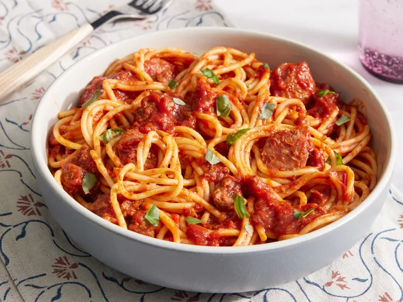

Home
World's Best Pasta Sauce Recipe

This pasta sauce is excellent in lasagna or as a meat sauce. I use
it in my popular lasagna recipe, so I thought I'd share it on its
own.
Ingredients
- 1 pound sweet Italian sausage, sliced
- ¾ pound lean ground beef
- ½ cup minced onion
- 2 cloves garlic, crushed
- 1 (28 ounce) can crushed tomatoes
- 2 (6.5 ounce) cans tomato sauce
- 2 (6 ounce) cans tomato paste
- ½ cup water
- 2 tablespoons white sugar
- 1 ½ teaspoons dried basil
- 1 teaspoon Italian seasoning
- ½ teaspoon fennel seed
- ½ teaspoon salt
- ¼ teaspoon ground black pepper
Steps
- Gather all ingredients.
-
Cook sausage, beef, onion, and garlic in a large pot or Dutch
oven over medium heat until browned; drain fat.
-
Stir in crushed tomatoes, tomato sauce, tomato paste, and water.
-
Mix in sugar, basil, Italian seasoning, fennel seed, salt, and
pepper.
-
Cover and simmer, stirring occasionally, until cooked through,
about 1 ½ hours.
- Serve with your favorite pasta and enjoy!